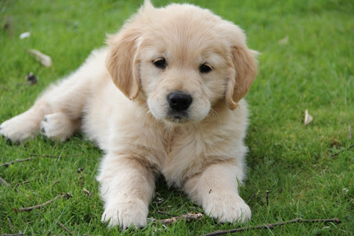
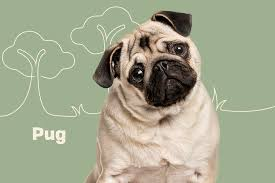

The Golden Retriever is a medium-large gun dog that was bred to retrieve shot waterfowl, such as ducks and upland game birds, during hunting and shooting parties. The name "retriever" refers to the breed's ability to retrieve shot game undamaged due to their soft mouth.
The Pomeranian is a breed of dog of the Spitz type that is named for the Pomerania region in north-west Poland and north-east Germany in Central Europe.Classed as a toy dog breed because of its small size, the Pomeranian is descended from larger Spitz-type dogs, specifically the German Spitz.

The pug is a breed of dog originally from China, with physically distinctive features of a wrinkly, short-muzzled face and curled tail. The breed has a fine, glossy coat that comes in a variety of colors, most often light brown or black, and a compact, square body with well-developed muscles.
Wikipedia page on Dogs